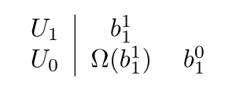

Beispiel 1
Gegeben sei die Matrix \(A \in \mathbb{R}^{2 \times 2}\)
$$A := \begin{pmatrix}
11 & -4\\
25 & -9
\end{pmatrix}$$
.
1. Charakteristisches Polynom berechnen:
\(p_A(\lambda) = (\lambda - 1)^2\)
Daraus folgt: \(\lambda = 1\) \(\Rightarrow\)
2. Anzahl der Jordankästchen bestimmen:
\begin{align}
\dim E_{1} &= \dim \text{Kern}(A -1 \cdot I) \\
&= \dim \text{Kern} \begin{pmatrix}
10 & -4\\
25 & -10
\end{pmatrix}\\
&= \dim \text{Kern} \begin{pmatrix}
10 & -4\\
0 & 0
\end{pmatrix}\\
&= \dim \left [ \begin{pmatrix}2\\5\end{pmatrix} \right ] \\
&= 1
\end{align}
\(\Rightarrow\)
$$\Rightarrow
J =
\begin{pmatrix}1 & 1\\
0 & 1
\end{pmatrix}$$
.
Basiswechselmatrix bestimmen
Basisvektoren für den Eigenwert 1 bestimmen:
$$\Omega = \Phi_{| H_\lambda} - \lambda \cdot id =
\begin{pmatrix}
10 & - 4\\
25 & -10
\end{pmatrix}
$$
,
$$K_1 = \text{Kern } \Omega^1 = \left [ \begin{pmatrix}2 \\ 5 \end{pmatrix} \right ]$$
$$K_2 = \text{Kern } \Omega^2 = \text{Kern } (\begin{pmatrix}10 & -4\\ 25 & -10 \end{pmatrix} \cdot \begin{pmatrix}10 & -4\\ 25 & -10 \end{pmatrix}) = \text{Kern } (\begin{pmatrix}0 & 0\\ 0 & 0 \end{pmatrix})
=
\left[
\begin{pmatrix}1 \\ 0 \end{pmatrix},
\begin{pmatrix}0 \\ 1 \end{pmatrix}
\right]$$
$$K_2 \stackrel{!}{=} U_1 \oplus K_1
\Rightarrow
\left [
\begin{pmatrix}
1 \\ 0
\end{pmatrix}
\right ] ~~~ U_0 = K_1$$

Schema zum finden der Basiswechselmatrix
Wähle
$$b_1^1 \in U_1: b_1^1 = \begin{pmatrix}1 \\0 \end{pmatrix} \Rightarrow \Omega(b_1^1) = \begin{pmatrix}10 \\ 25 \end{pmatrix}$$
$$\Rightarrow S =
\begin{pmatrix}
10 & 1 \\
25 & 0
\end{pmatrix}$$
$$\Rightarrow S^{-1} =
\begin{pmatrix}
0 & \frac{1}{25} \\
1 & -\frac{2}{5}
\end{pmatrix}$$
$$A = S \cdot J \cdot S^{-1}$$
$$\Leftrightarrow
\begin{pmatrix}
11 & -4\\
25 & -9
\end{pmatrix}
=
\begin{pmatrix}
10 & 1 \\
25 & 0
\end{pmatrix}
\cdot
\begin{pmatrix}1 & 1\\
0 & 1
\end{pmatrix}
\cdot
\begin{pmatrix}
0 & \frac{1}{25} \\
1 & -\frac{2}{5}
\end{pmatrix}$$
Beispiel 2
Gegeben sei die Matrix \(A \in \mathbb{R}^{2 \times 2}\)
$$A := \begin{pmatrix}
1 & 2\\
3 & 6
\end{pmatrix}$$
.
1. Charakteristisches Polynom berechnen:
$$p_A(\lambda) = \det \begin{pmatrix}
1 -\lambda & 2\\
3 & 6 - \lambda
\end{pmatrix} = (1- \lambda) \cdot (6 - \lambda) - 6 = 6-6\lambda-\lambda+\lambda^2-6=\lambda^2-7\lambda = \lambda \cdot (\lambda - 7)$$
Daraus folgt: 0 und 7 sind Eigenwerte. Sie haben jeweils die algebraische Vielfachheit 1.
Daraus folgt: Die Jordansche Normalform hat genau zwei Jordanblöcke, die beide die Größe 1x1 haben.
Daraus folgt: Beide Jordanblöcke haben genau ein Jordankästchen der Größe 1x1.
Daraus folgt: Die Jordansche Normalform der Matrix ist:
$$J = \begin{pmatrix}
0 & 0\\
0 & 7
\end{pmatrix}$$
Basiswechselmatrix bestimmen
Basisvektoren für den Eigenwert 0 bestimmen:
$$K_1 = \text{Kern }(A- 0 \cdot E) = \text{Kern } \begin{pmatrix}
1 & 2\\
3 & 6
\end{pmatrix} = \left [ \begin{pmatrix}2 \\ -1 \end{pmatrix} \right ] $$
Basisvektoren für den Eigenwert 7 bestimmen:
$$K_1 = \text{Kern }(A- 7 \cdot E) = \text{Kern } \begin{pmatrix}
-6 & 2\\
3 & -1
\end{pmatrix} = \text{Kern } \begin{pmatrix}
1 & -\frac{1}{3}\\
0 & 0
\end{pmatrix} = \left [ \begin{pmatrix}1 \\ 3 \end{pmatrix} \right ] $$
Zusammensetzen:
$$S = \begin{pmatrix}2 & 1 \\ -1 & 3 \end{pmatrix}$$
$$S^{-1} = \frac{1}{7} \cdot \begin{pmatrix}3 & -1 \\ 1 & 2 \end{pmatrix}$$
Anmerkung
Man hätte übrigens jeden Vektor aus
$$\left [ \begin{pmatrix}2 \\ -1 \end{pmatrix} \right ]$$
nehmen können. Angenommen, man hätte den Vektor
$$\begin{pmatrix}-14 \\ 7 \end{pmatrix}$$
gewählt:
$$S = \begin{pmatrix}-14 & 1 \\ 7 & 3 \end{pmatrix}$$
$$S^{-1} = \frac{1}{49} \cdot \begin{pmatrix}-3 & 1 \\ 7 & 14 \end{pmatrix}$$
Das gleiche gilt natürlich für jeden anderen gewählten Vektor. Die inverse Matrix ändert sich selbstverständlich, jedoch nicht die Jordansche Normalform oder die ursprüngliche Matrix.
{kind=link}